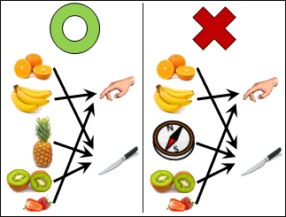
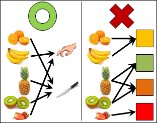
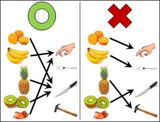
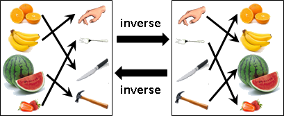
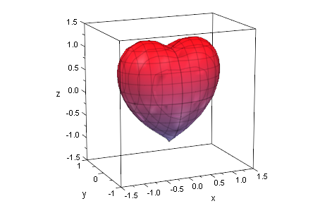

Function
Function
「函數」這個翻譯非常不直覺。函數其實是「對應」與「變換」兩種概念的結合。
對應，就是一個東西對應一個東西。變換，就是從一個東西，按照對應關係，變成另一個東西。

函數的規定
輸入都是同一類的東西。輸出都是同一類的東西。輸入與輸出可以同類、也可以不同類。輸入數量和輸出數量沒有任何限制。
相異輸入可以對應到相同輸出，但是相同輸入不可以對應到相異輸出。
必須用到每個輸入，但是不一定要用到每個輸出。被用到的輸出們，稱作「像image」。
顯然，用到的輸入數量大於等於用到的輸出數量。
這些刁鑽古怪的規定，讓函數獨樹一格。宛如中醫利用藥的偏性來治病，數學家利用函數的特性來解題。
反函數（inverse）
一個函數的「反函數」，就是對調輸入輸出、反轉對應方向所形成的函數。反函數必須符合函數的規定。原本函數要擁有反函數的話，就必須用到每個輸出、相同輸出不可以對應到相異輸入──也就是說，輸入數量與輸出數量必須相等，而且恰好一一對應。
顯然，當f的反函數是g，則g的反函數是f。
想要表達反過來對應這件事，竟然還得符合函數的規定，實在很莫名其妙。直接發明一個「反對應」的概念不就好了？當然可以呀！只是數學家鮮少討論這件事而已。
函數的用法
函數可以描述兩件事物的關聯。例如三角函數就是三角形內角與邊長的關聯。半徑與圓周長、整數和質因數分解，通通可以寫成函數。
令x代表一個圓的半徑 perimeter(x) = 2πx
函數可以描述一件事物具有附屬屬性。例如一個人具有身高、具有體重。概念類似於中文的「的」、英文的「of」。
令x代表一個人 height(x) 一個人的身高 weight(x) 一個人的體重
函數可以描述從事一件事情的結果。
令x代表移動的方向，令f(x)代表移動的距離 f(east) = (+1,0) 往東，則x座標多一 f(west) = (-1,0) 往西，則x座標少一
函數可以描述圖形。函數的輸入和輸出必須是數值，當作是座標。例如愛心方程式。
函數還有各式各樣的用法，族繁不及備載。